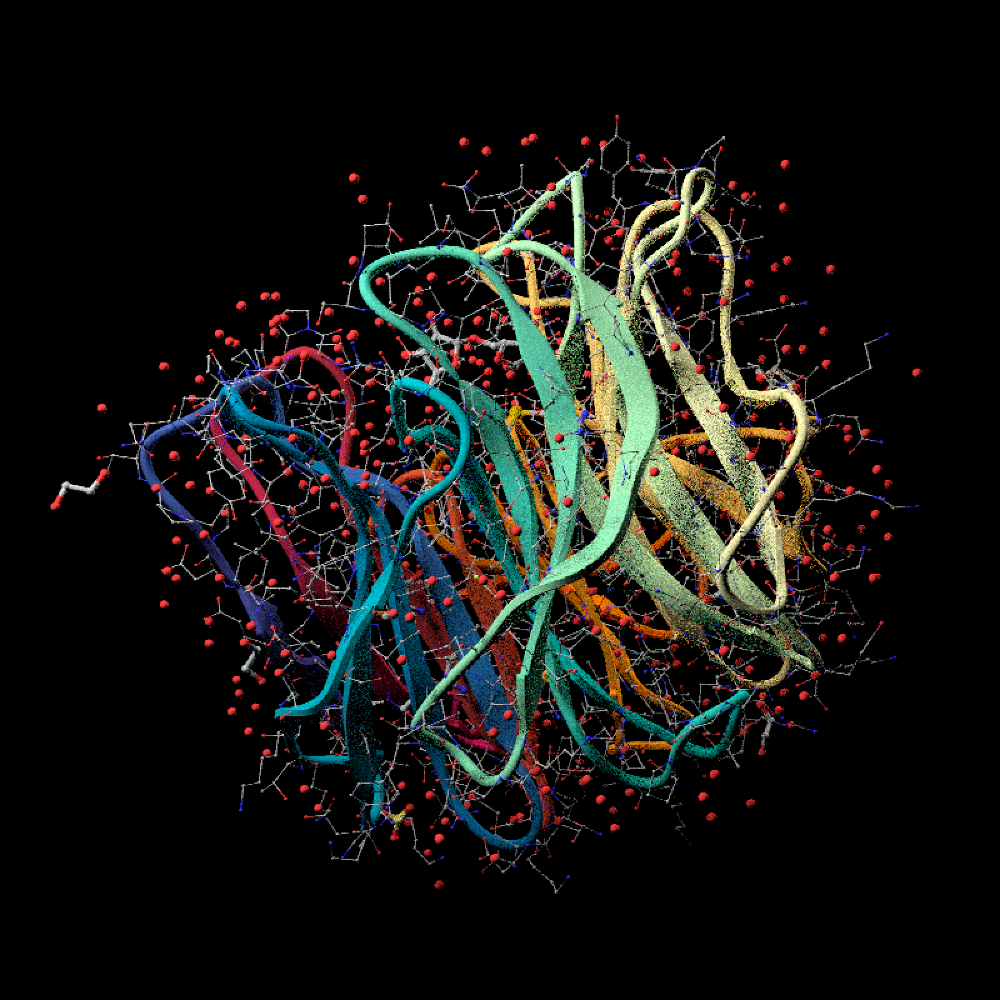
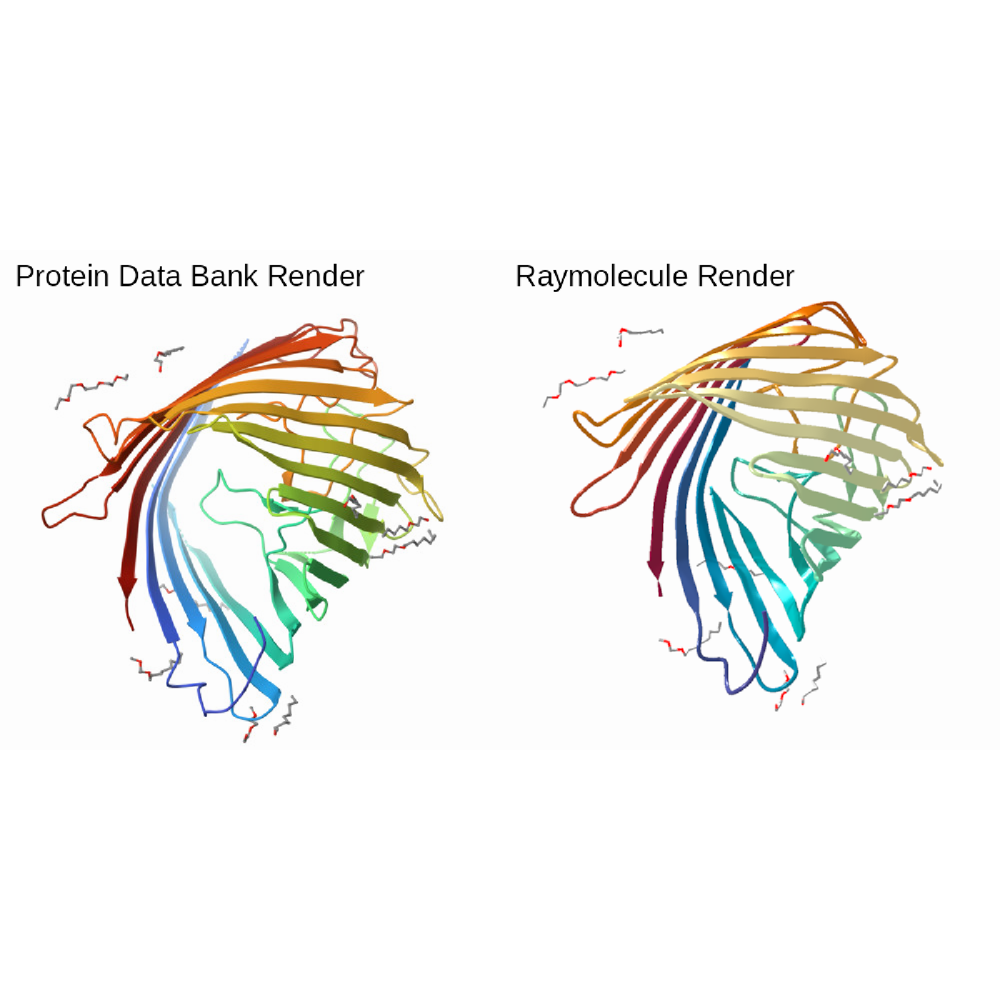
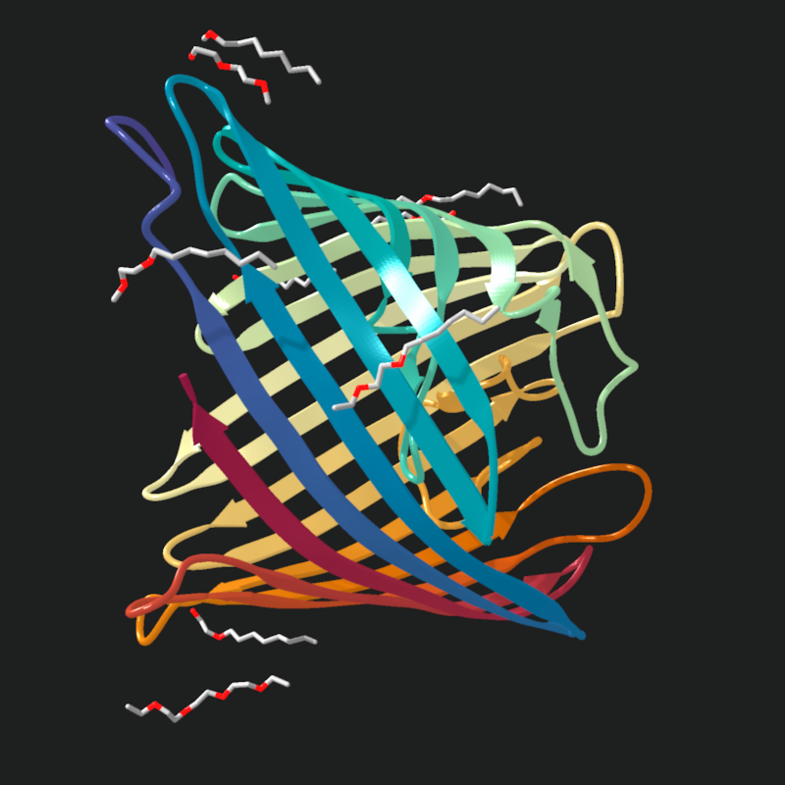
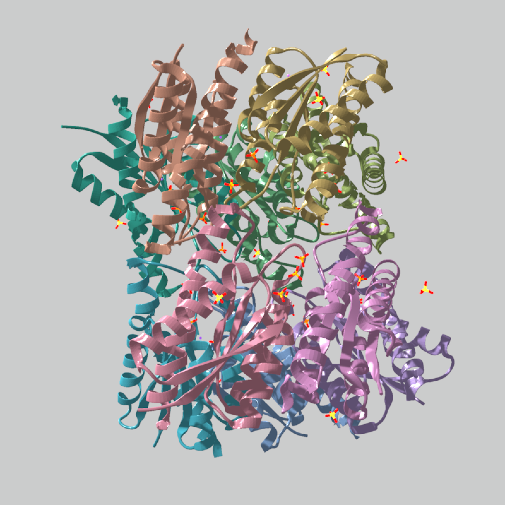
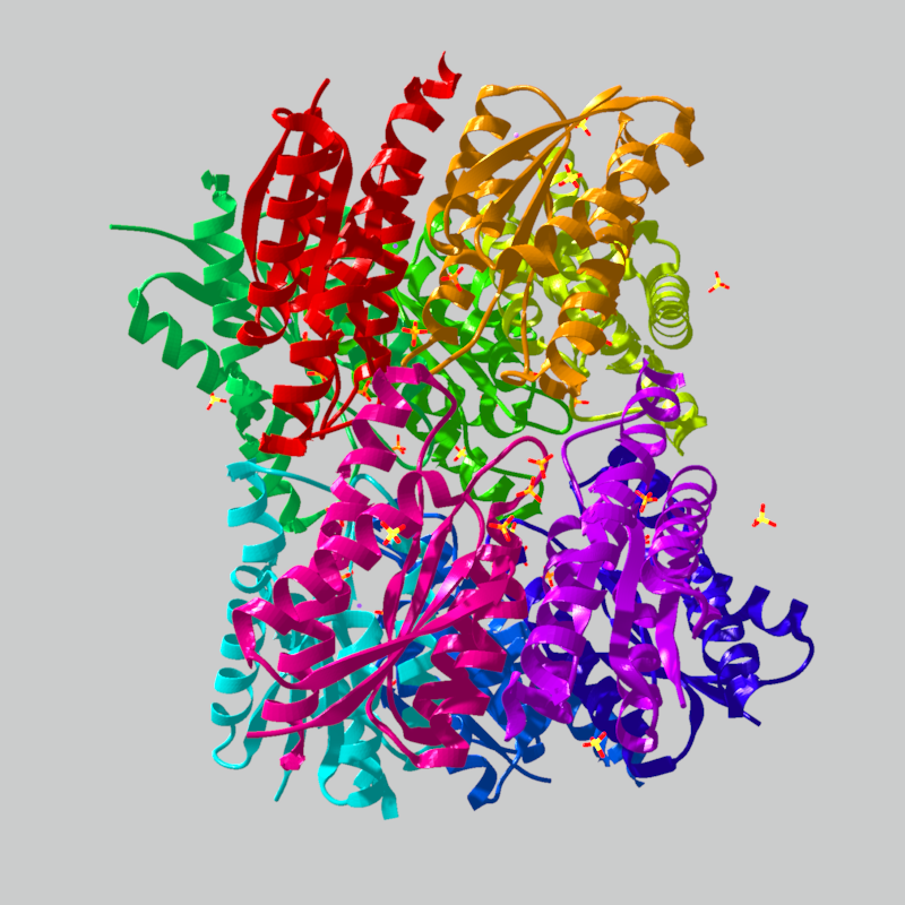
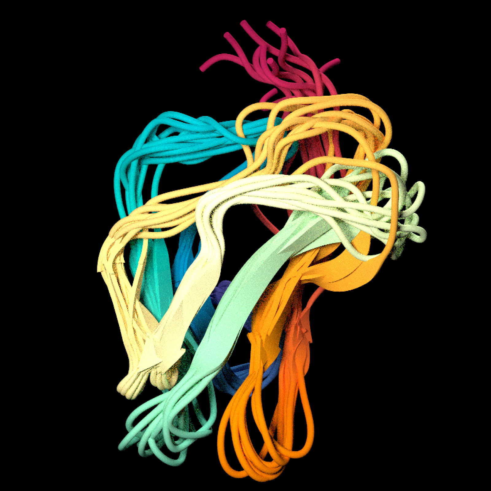
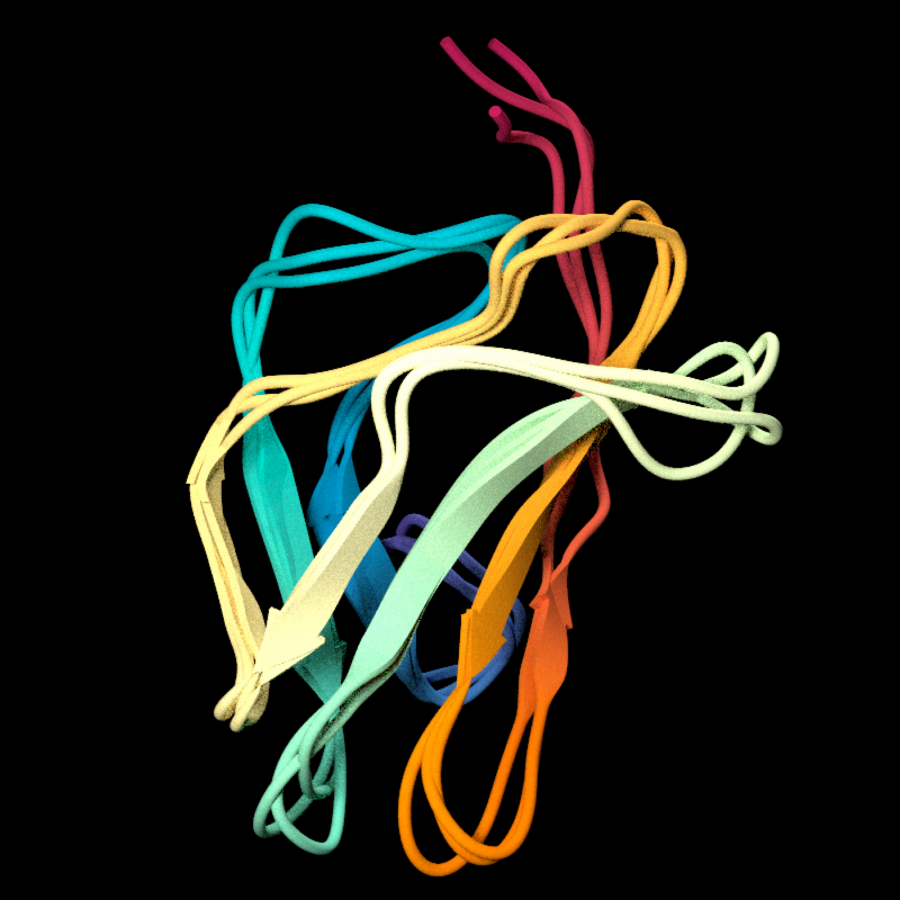

Generates a mesh-based protein ribbon from a PDB model parsed with [read_pdb()]. Segments with contiguous peptide-plane backbone data are rendered with a peptide-plane cartoon sweep, while incomplete backbone segments fall back to a CA-driven centripetal Catmull-Rom ribbon. The mesh is emitted as indexed watertight geometry with UV coordinates, and eligible `SHEET` annotations are rendered with peptide-plane strand profiles and tapered C-terminal arrowheads.
generate_ribbon_scene(
model,
x = 0,
y = 0,
z = 0,
scale = 1,
center = TRUE,
model_id = NA_integer_,
ribbon_width = 2,
ribbon_thickness = 0.25,
cross_section_resolution = 24,
subdivisions = 8,
color_mode = c("chain", "uv"),
chain_colors = NULL,
texture = NULL,
material = rayrender::glossy,
material_args = list(),
material_vertex = rayvertex::material_list(type = "phong"),
raster_ambient_mix = 0.5,
show_hetero_atoms = TRUE,
show_hetero_bonds = TRUE,
show_waters = FALSE,
show_protein_atoms = FALSE,
show_protein_bonds = FALSE,
atom_scale = 1,
bond_width = 1,
use_vertex_normals = FALSE,
verbose = FALSE
)Arguments
- model
Model extracted from a PDB file with [read_pdb()].
- x
Default `0`. X offset, applied after centering.
- y
Default `0`. Y offset, applied after centering.
- z
Default `0`. Z offset, applied after centering.
- scale
Default `1`. Amount to scale the ribbon geometry.
- center
Default `TRUE`. Centers the bounding box of the model.
- model_id
Default `NA_integer_`. PDB `MODEL` identifier(s) to render. The default `NA` renders all parsed models in the ensemble.
- ribbon_width
Default `2`. Width of the ribbon cross-section.
- ribbon_thickness
Default `0.25`. Thickness of the ribbon cross-section.
- cross_section_resolution
Default `24`. Number of perimeter vertices used to approximate the ribbon cross-section.
- subdivisions
Default `8`. Minimum number of spline samples per residue interval. Longer backbone spans are automatically refined to a smaller internal step size to avoid visible faceting.
- color_mode
Either `"chain"` or `"uv"`. If omitted, single-chain proteins default to `"uv"` and multi-chain proteins default to `"chain"`.
- chain_colors
Optional named vector or named list keyed by chain ID. Used when `color_mode = "chain"`.
- texture
Optional texture path. Used when `color_mode = "uv"`. If omitted in UV mode, a built-in rainbow gradient is used.
- material
Default `rayrender::glossy`. Optional rayrender material used to initialize the mesh material when `material_vertex` is not supplied. Must be either `glossy`, `diffuse`, or `dielectric`.
- material_args
Default `list()`. Named list of additional arguments passed to `material`. Arguments supplied by raymolecule for colors and textures override entries with the same names. For example, use `list(gloss = 0.35, reflectance = 0.12)` with `rayrender::glossy`, or `list(sigma = 0.4)` with `rayrender::diffuse`.
- material_vertex
Default `rayvertex::material_list(type = "phong")`. Mesh material template.
- raster_ambient_mix
Default `0.5`. Fraction of raster ribbon color contributed by the ambient, unlit material channel. Values closer to `0` emphasize diffuse directional lighting; values closer to `1` flatten lighting and preserve texture/color more directly.
- show_hetero_atoms
Default `TRUE`. If `TRUE`, display non-protein `HETATM` records as bare spheres alongside the ribbon.
- show_hetero_bonds
Default `TRUE`. If `TRUE`, display bonds between shown hetero atoms as a ball-and-stick overlay alongside the ribbon.
- show_waters
Default `FALSE`. If `TRUE`, include water `HETATM` records when `show_hetero_atoms = TRUE` and `show_hetero_bonds = TRUE`.
- show_protein_atoms
Default `FALSE`. If `TRUE`, display protein `ATOM` records as small spheres alongside the ribbon.
- show_protein_bonds
Default `FALSE`. If `TRUE`, display inferred covalent bonds between protein `ATOM` records as a thin stick overlay.
- atom_scale
Default `1`. Multiplier applied to the radii of optional atom overlays.
- bond_width
Default `1`. Multiplier applied to the radii of optional bond overlays.
- use_vertex_normals
Default `FALSE`. If `TRUE`, attach the ribbon mesh's swept vertex normals. If `FALSE`, scenes omit explicit vertex normals and pathtraced renders use flat face normals.
- verbose
Default `FALSE`. If `TRUE`, report the PDB name and model identifiers being rendered.
Value
Raymesh scene containing a ribbon mesh.
Examples
ribbon_file = download_pdb("2w5o", out_dir = tempdir(), overwrite = TRUE)
ribbon_model = read_pdb(ribbon_file, verbose = TRUE)
#> Read COMPLEX STRUCTURE OF THE GH93 ALPHA-L-ARABINOFURANOSIDASE OF FUSARIUM GRAMINEARUM WITH ARABINOBIOSE PDB models [1]
#> PDB ID: 2W5O
#> Experiment: X-RAY DIFFRACTION
#> Parsed: 3231 atoms, 354 residues, 1 chains, 182 bonds
# Start with a centered raster ribbon using the default ribbon width,
# thickness, color mode, and ligand overlays.
ribbon_model |>
generate_ribbon_scene() |>
render_model(
pathtrace = FALSE,
width = 800,
height = 800,
background = "grey12"
)
 # This pathtraced version widens the ribbon, increases cross-section
# resolution, applies a custom UV texture, turns on atom/bond overlays, and
# uses the mesh vertex normals.
texture_file = tempfile(fileext = ".png")
grDevices::png(texture_file, width = 64, height = 8, bg = "transparent")
graphics::par(mar = c(0, 0, 0, 0))
graphics::image(
matrix(seq(0, 1, length.out = 64), ncol = 1),
col = grDevices::hcl.colors(64, "Spectral", rev = TRUE),
axes = FALSE,
xlab = "",
ylab = ""
)
grDevices::dev.off()
#> agg_record_1d87565960d5
#> 2
ribbon_model |>
generate_ribbon_scene(
x = 0,
y = 0,
z = 0,
scale = 1,
center = TRUE,
ribbon_width = 1.8,
ribbon_thickness = 0.3,
cross_section_resolution = 32,
subdivisions = 10,
color_mode = "uv",
texture = texture_file,
material = rayrender::diffuse,
material_args = list(sigma = 0.2),
show_hetero_atoms = TRUE,
show_hetero_bonds = TRUE,
show_waters = TRUE,
show_protein_atoms = TRUE,
show_protein_bonds = TRUE,
atom_scale = 1.2,
bond_width = 0.8,
use_vertex_normals = TRUE,
verbose = TRUE
) |>
render_model(pathtrace = TRUE, width = 800, height = 800, samples = 32)
#> Rendering COMPLEX STRUCTURE OF THE GH93 ALPHA-L-ARABINOFURANOSIDASE OF FUSARIUM GRAMINEARUM WITH ARABINOBIOSE PDB models [1]
# This pathtraced version widens the ribbon, increases cross-section
# resolution, applies a custom UV texture, turns on atom/bond overlays, and
# uses the mesh vertex normals.
texture_file = tempfile(fileext = ".png")
grDevices::png(texture_file, width = 64, height = 8, bg = "transparent")
graphics::par(mar = c(0, 0, 0, 0))
graphics::image(
matrix(seq(0, 1, length.out = 64), ncol = 1),
col = grDevices::hcl.colors(64, "Spectral", rev = TRUE),
axes = FALSE,
xlab = "",
ylab = ""
)
grDevices::dev.off()
#> agg_record_1d87565960d5
#> 2
ribbon_model |>
generate_ribbon_scene(
x = 0,
y = 0,
z = 0,
scale = 1,
center = TRUE,
ribbon_width = 1.8,
ribbon_thickness = 0.3,
cross_section_resolution = 32,
subdivisions = 10,
color_mode = "uv",
texture = texture_file,
material = rayrender::diffuse,
material_args = list(sigma = 0.2),
show_hetero_atoms = TRUE,
show_hetero_bonds = TRUE,
show_waters = TRUE,
show_protein_atoms = TRUE,
show_protein_bonds = TRUE,
atom_scale = 1.2,
bond_width = 0.8,
use_vertex_normals = TRUE,
verbose = TRUE
) |>
render_model(pathtrace = TRUE, width = 800, height = 800, samples = 32)
#> Rendering COMPLEX STRUCTURE OF THE GH93 ALPHA-L-ARABINOFURANOSIDASE OF FUSARIUM GRAMINEARUM WITH ARABINOBIOSE PDB models [1]

# Start the beta-barrel example with the default UV texture in raster mode.
# We rotate the model to match the render in the protein data bank.
barrel_model = read_pdb(download_pdb("4fsp", out_dir = tempdir()))
barrel_scene = barrel_model |>
generate_ribbon_scene(color_mode = "uv", raster_ambient_mix = 0.7)
barrel_render = render_model(
barrel_scene,
pathtrace = FALSE,
width = 500,
height = 500,
background = "white",
lookfrom = c(-89.95, 66.11, -109.95),
angle = c(-60, 270, 180),
lookat = c(6.06, -7.62, 1.41),
fov = 27.2,
plot = FALSE
)
pdb_4fsp_image = rayimage::render_title(system.file(
"extdata",
"4fsp_assembly-1.jpeg",
package = "raymolecule",
mustWork = TRUE
), title_text = "Protein Data Bank Render")
ray_4fsp_image = rayimage::render_title(
barrel_render,
title_text = "Raymolecule Render"
)
rayimage::plot_image_grid(list(pdb_4fsp_image, ray_4fsp_image),dim=c(1,2))

# Raising the raster ambient mix gives the same barrel less directional
# lighting
barrel_model |>
generate_ribbon_scene(
color_mode = "uv",
texture = NULL,
raster_ambient_mix = 0.8
) |>
render_model(
pathtrace = FALSE,
width = 800,
height = 800,
background = "grey12"
)

# Start the multi-chain example with the automatic chain color palette.
multi_chain_model = read_pdb(download_pdb("1xn1", out_dir = tempdir()))
multi_chain_model |>
generate_ribbon_scene(color_mode = "chain") |>
render_model(
pathtrace = FALSE,
width = 800,
height = 800,
background = "grey80"
)

# An explicit chain color map replaces the automatic palette without
# changing the ribbon geometry.
chain_ids = unique(multi_chain_model$residues$chain_id)
chain_ids = chain_ids[!is.na(chain_ids)]
chain_colors = stats::setNames(grDevices::rainbow(length(chain_ids)), chain_ids)
multi_chain_model |>
generate_ribbon_scene(
color_mode = "chain",
chain_colors = chain_colors,
material_vertex = rayvertex::material_list(type = "phong")
) |>
render_model(
pathtrace = FALSE,
width = 800,
height = 800,
background = "grey80"
)

# Start the NMR ensemble view by rendering every parsed model.
ensemble_model = read_pdb(download_pdb("1co1", out_dir = tempdir()))
ensemble_model |>
generate_ribbon_scene(center = FALSE) |>
render_model(
pathtrace = TRUE,
fov=26,
lookfrom = c(-45.95, 58.56, 79.95),
lookat = c(-7.19, 3.87, -1.52) ,
width = 800,
height = 800,
background = "black"
)

# Selecting three model IDs shows a cleaner subset of the same ensemble.
ensemble_model |>
generate_ribbon_scene(model_id = c(1L, 5L, 10L), center = FALSE) |>
render_model(
pathtrace = TRUE,
fov=26,
lookfrom = c(-45.95, 58.56, 79.95),
lookat = c(-7.19, 3.87, -1.52) ,
width = 800,
height = 800,
background = "black"
)
